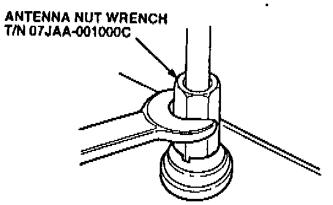
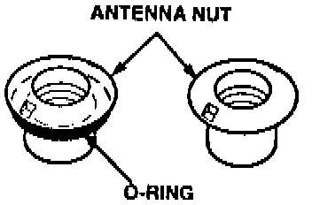
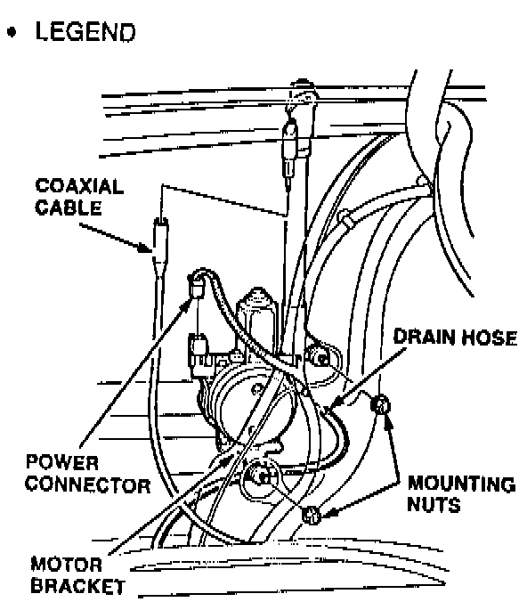
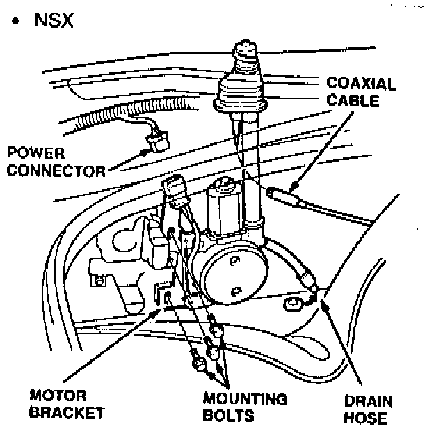
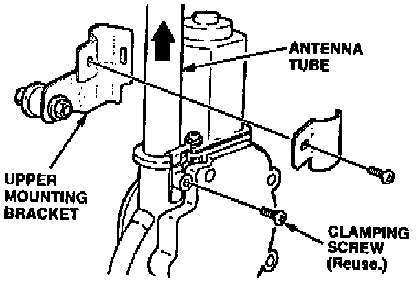
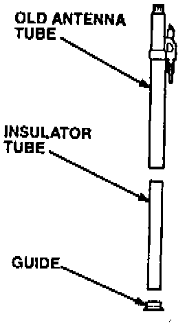
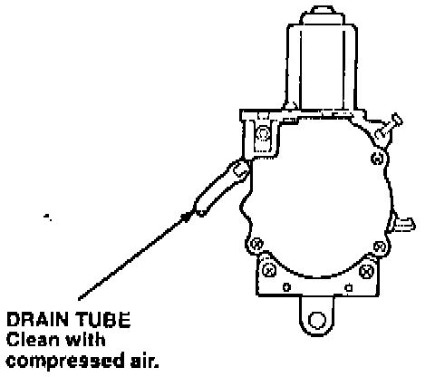
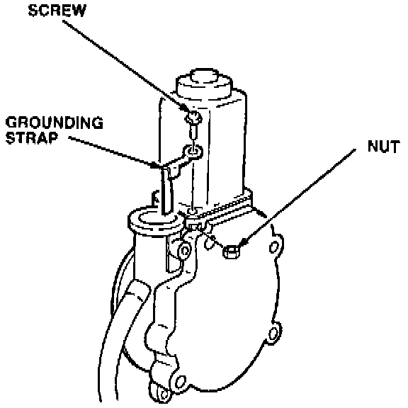

Antenna Tube (Disassembly)

1. Remove the antenna nut with the special tool.

2. Inspect the antenna nut.
^ If the antenna nut has an O-ring, do not install an antenna seal in the replacement collar.
^ If the antenna nut does not have an O-ring, you must install an antenna seal in the replacement collar.
3. Turn the ignition switch ON; then turn the radio on to extend the antenna mast.
4. Remove the antenna mast from the antenna tube. Retain the mast.


5. Disconnect the coaxial cable and the power connector from the antenna assembly. Loosen the lower mounting hardware; then remove the antenna assembly from the car.

6. Remove the upper mounting bracket from the antenna tube (Legend only); then remove and retain the clamping screw that holds the antenna tube to the antenna assembly. Pull the antenna tube out of the antenna assembly.

7. Remove the guide and the insulator tube from the old antenna tube. Thoroughly clean the guide and the insulator tube with contact cleaner to remove any dirt and grease.

8. Clean the antenna assembly drain tube with compressed air. Make sure that the tube is clear of dirt and grease.

9. Remove the screw and nut holding the grounding strap to the antenna motor assembly; then discard the grounding strap. Clean the area on the motor housing where the grounding strap contacts the motor, with a small wire brush.
10. Install the new grounding strap provided with the replacement tube, and secure it to the antenna motor assembly with the screw and nut removed in step 9.
11. Install the cleaned insulator tube and guide into the replacement antenna tube.